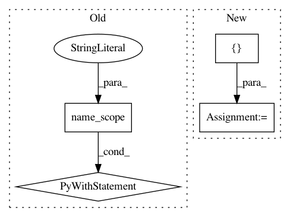

c4020b5d3ab637e1d6e8c2bcd96c955a8f1db45b,garage/tf/algos/npo.py,NPO,_build_policy_loss,#NPO#Any#,233
Before Change
adv_valid = tf.nn.batch_normalization(
adv_valid, mean, var, 0, 1, eps)
if self.positive_adv:
with tf.name_scope("positive_adv"):
m = tf.reduce_min(adv_valid)
adv_valid = (adv_valid - m) + eps
if self.policy.recurrent:
policy_dist_info = self.policy.dist_info_sym(
i.obs_var,
i.policy_state_info_vars,
After Change
if self.policy.recurrent:
adv = center_advs(adv, axes=[0], eps=eps)
else:
adv_valid = center_advs(adv_valid, axes=[0], eps=eps)
if self.positive_adv:
if self.policy.recurrent:
adv = positive_advs(adv, eps)
In pattern: SUPERPATTERN
Frequency: 3
Non-data size: 4
Instances
Project Name: rlworkgroup/garage
Commit Name: c4020b5d3ab637e1d6e8c2bcd96c955a8f1db45b
Time: 2019-04-17
Author: CatherineSue@users.noreply.github.com
File Name: garage/tf/algos/npo.py
Class Name: NPO
Method Name: _build_policy_loss
Project Name: reinforceio/tensorforce
Commit Name: 75eeb9825e331581839ad647acd15a40cd250c35
Time: 2016-10-30
Author: mks40@cam.ac.uk
File Name: tensorforce/value_functions/deep_q_network.py
Class Name: DeepQNetwork
Method Name: create_training_operations
Project Name: MorvanZhou/tutorials
Commit Name: 780dcd9fd372afa8524a6515eec6a4c90b1494c9
Time: 2017-03-09
Author: morvanzhou@gmail.com
File Name: Reinforcement_learning_TUT/8_Actor_Critic_Advantage/AC_CartPole.py
Class Name: Actor
Method Name: __init__